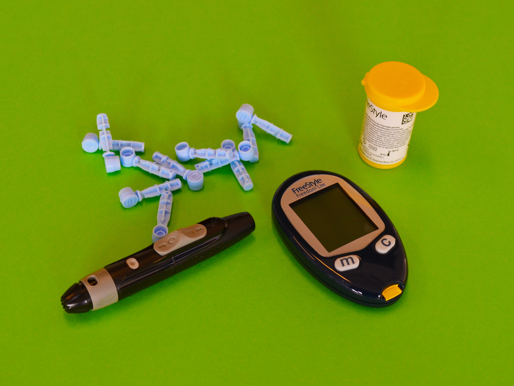
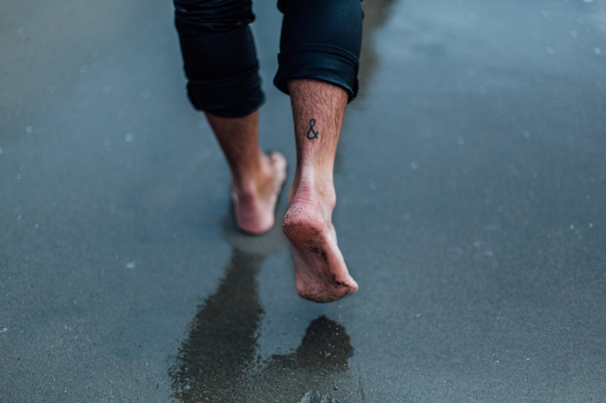
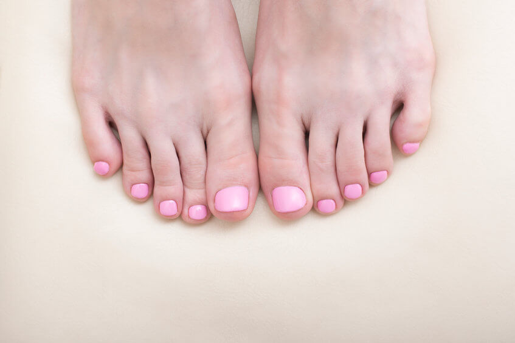
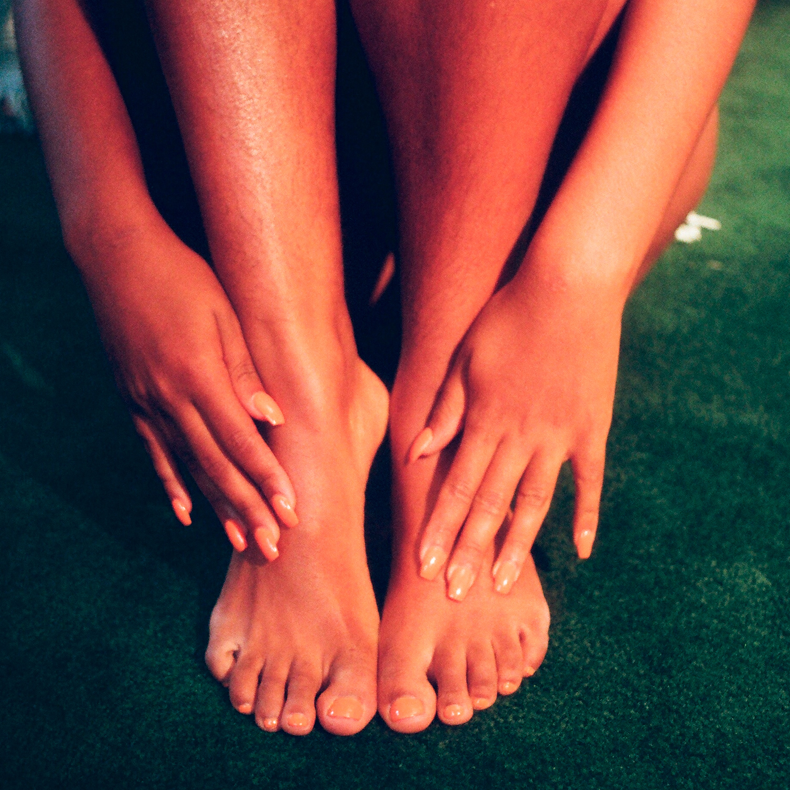
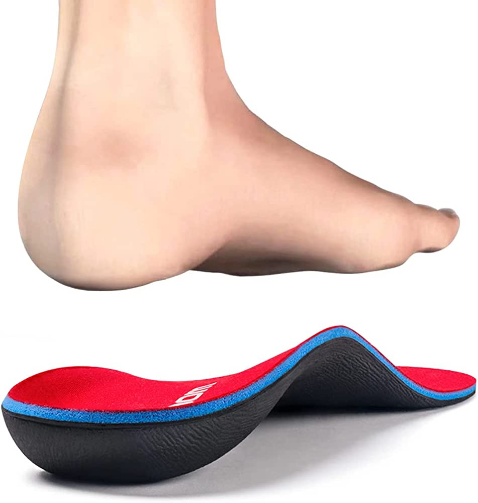

Diabetic Foot Care
Specialized care for individuals with diabetes to maintain healthy feet and prevent complications.

Heel Pain/Plantar Fasciitis
Evidence-based treatments to alleviate heel pain and manage plantar fasciitis for improved comfort and mobility.
Skin Problems
Treatments for a range of skin conditions, including fungal infections, corns, calluses, and warts.

Nail Deformities
Expert care for nail conditions such as ingrown nails, fungal nails, and abnormal nail growth.

Pain due to Bunion/Hammer Toe
Comprehensive treatment options to relieve pain caused by bunions and hammer toes, promoting comfort and restoring normal foot function.

Sports Injuries
Specialized care for foot and ankle injuries commonly associated withsports activities, aiding in recovery and preventing future injuries.
Pediatric Care (In/Out Toe)
Gentle and effective treatments for children's foot conditions, including in-toeing and out-toeing, ensuring healthy foot development.
Wound Care
Comprehensive wound management for individuals with diabetes or peripheral vascular disease to promote proper healing and prevent complications.

Custom Orthotics
Custom-made orthotic devices designed to provide support, correct biomechanical issues, and alleviate foot and ankle pain.
Shoe Gear Modifications
Expert modifications to footwear to accommodate specific foot conditions, enhance comfort, and promote proper foot alignment.
COVID-19
Our office prioritizes the safety and well-being of our patients.
In accordance with CDC guidelines, we have implemented additional precautions to ensure a secure environment.
We kindly request all visitors to wear proper face coverings throughout their time in the office, as it contributes to the overall safety of everyone present.
To maintain a thorough level of cleanliness, we have a rigorous disinfecting routine in place, which may require additional time between appointments.
Rest assured, our dedicated staff diligently cleans and sanitizes the office daily, providing you with a clean and hygienic space for your visit.
About Dr. Khoobyar
Loyola High School NYC '93
SUNY Binghamton '97
New York College of Podiatric Medicine '01
Post Graduate Surgical Training '03
Over 20+ years of experience in private practice.
© 2023 Klein and Khoobyar DPM PC